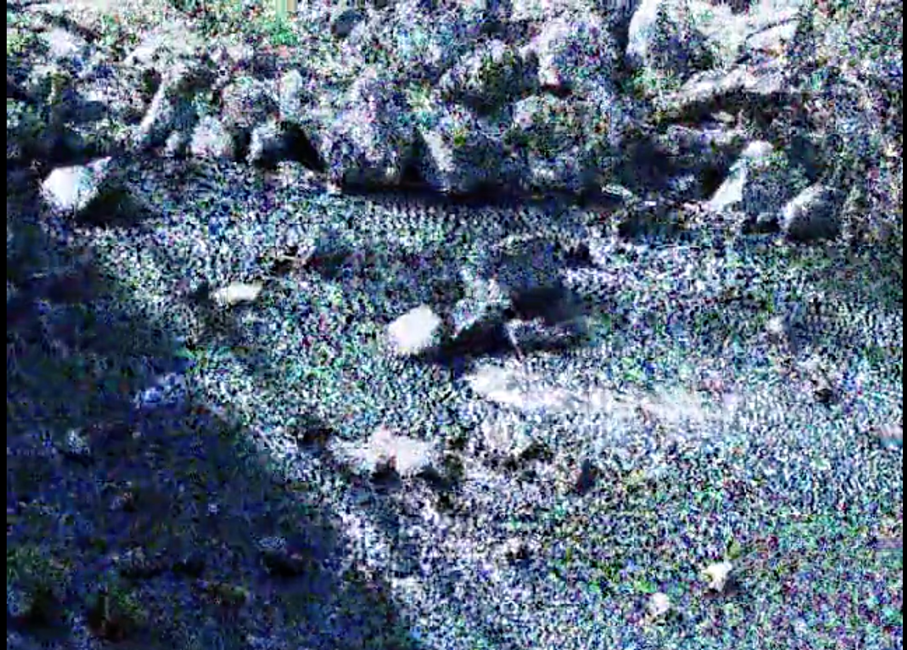
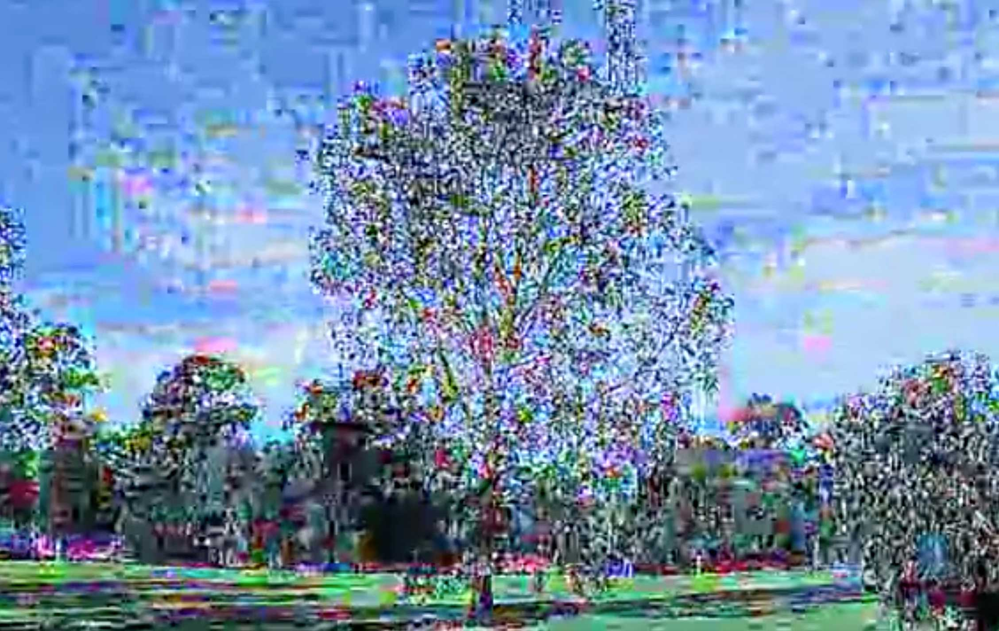

Works
Here you can browse images and sound of my previous and current projects and work. Use the links above to switch pages.
THE BRIDGE (2018)
The Bridge is an exploration of time, memory and speech. Utilizing a neurological phenomenon known as "Delayed Auditory Feedback", a traumatic story is distorted and fragmented to become an echo of the actual event.
GRACEFUL DEGRADATION (2017)
Graceful Degradation is a engineering term whereby a system is designed to retain its core functions even when degraded or partially destroyed. Video and audio is transcoded 1000 times to create a slow shift to a new visual and aural identity.
This is the text about fluid
This is the text about compositions
VLF
VLF is a project I started in 2015 making 80s inspired electronic music. You can find a link to my Soundcloud here.